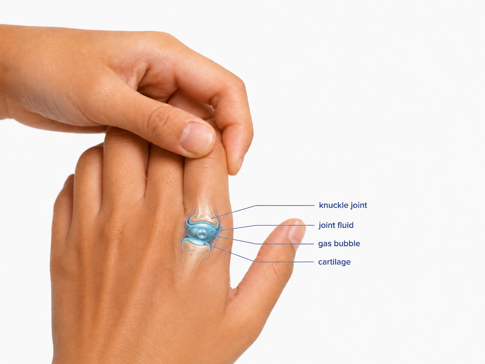

Painless knuckle cracking is usually not dangerous. The sound itself is usually less important than whether the finger is painful, swollen, stiff, weak, locking, or recently injured.
Why knuckles crack
Finger joints contain cartilage, a joint capsule, and synovial fluid. When a joint is stretched or moved, pressure can change inside the joint, creating the familiar pop or crack.
Does it cause arthritis?
Routine painless knuckle cracking has not been clearly shown to cause hand arthritis. It is generally more of a habit or sensation than a sign of damage.
When to get checked
Hand symptoms deserve more attention when cracking is associated with pain, swelling, stiffness, reduced grip strength, numbness, catching, locking, visible deformity, instability, or a new injury.
Bottom line
Cracking your knuckles is usually more annoying than dangerous. Painful or function-limiting symptoms should be evaluated.
Concerned about hand pain or popping?
If hand symptoms are limiting function, a hand and wrist evaluation can help clarify the cause.
Schedule an Appointment